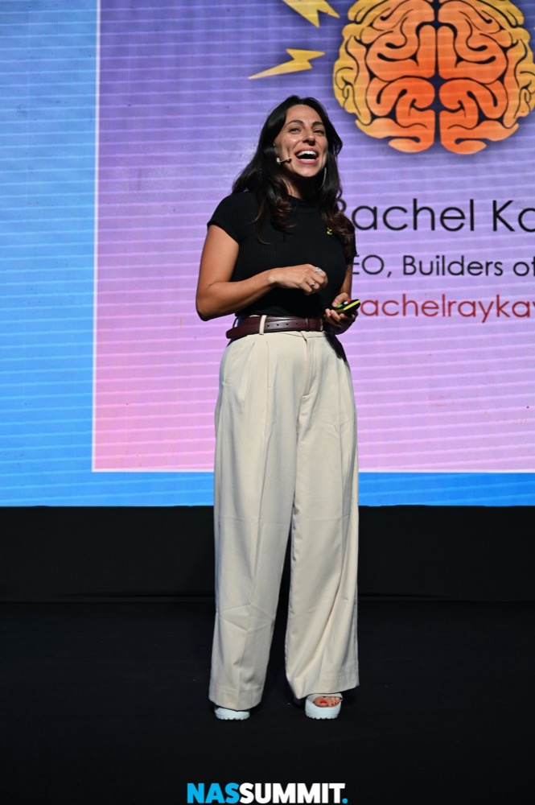
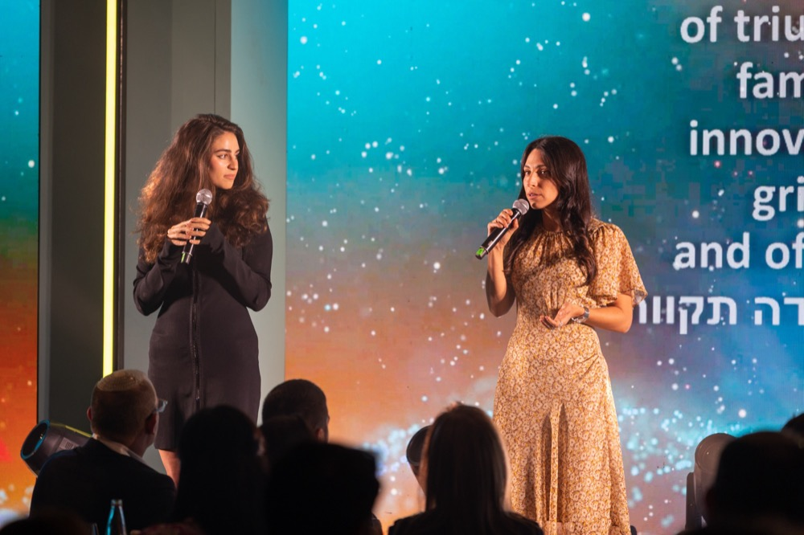
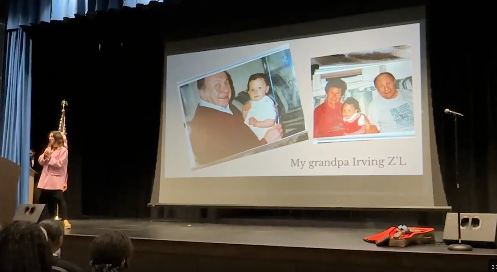
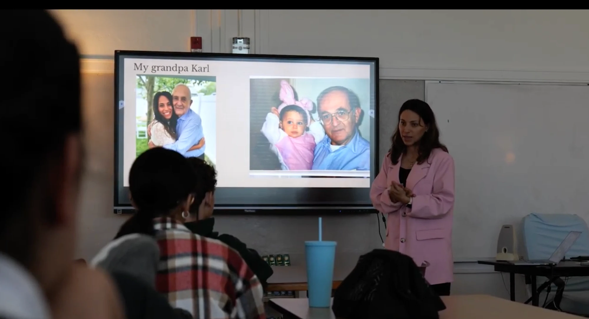
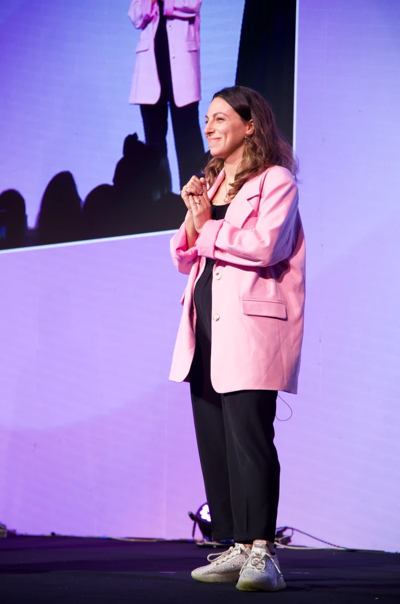
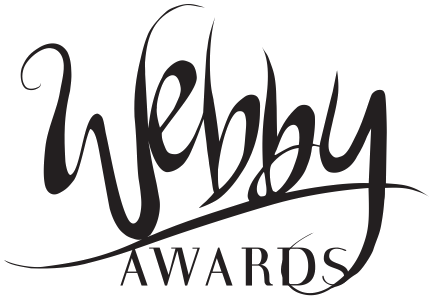

rachel kastner
Startup operator. Creative and communications strategist.
I lead brand and comms at Empathy. I've produced content that's reached hundreds of millions of people. I facilitate rooms full of people trying to figure hard things out. The rest of the time you'll find me writing something down.
- Follow me here
- Read my writing here
- Work with me here
- Listen to me ramble about topics here
- Check out the viral Holocaust education series here
- See what I built at Nas Daily here
I'm a high agency generalist, not afraid of getting my hands dirty. An operator and storyteller.
Forbes 30 Under 30, even though my career path has been very nonlinear. A decade (so far) between media and VC-backed tech companies has made my life interesting and my career a lot of fun. I also consult for nonprofits and private philanthropies on strat comms.
I love facilitating, moderating, and hosting. I want to do a lot more of it. A decade speaking in schools across the US. Facilitating small conferences and hosting events.
Two years offline: I spent 5+ years working with some of the biggest influencers in the world. Hundreds of millions of views. Then I spent 2 years chronically offline. I'm obsessed with building an intentional life, maintaining my attention in a world that wants to distract. I also am very curious about how we maintain a sense of truth, authenticity and autonomy in today's wacky wacky world.
I believe in bridge-building using storytelling. I've spent a lot of free time trying to bring more empathy to the Middle East, through various NGOs. Happy to dive deep on this if that's something you care about.
Oh, and I wrote a children's book for fun that I love.





Featured in

Granddaughter of three Holocaust survivors. Wife and mom.